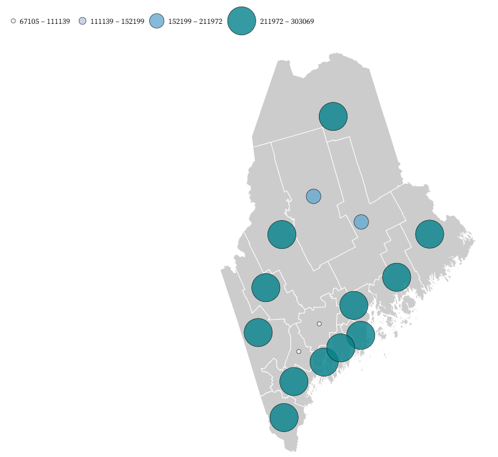
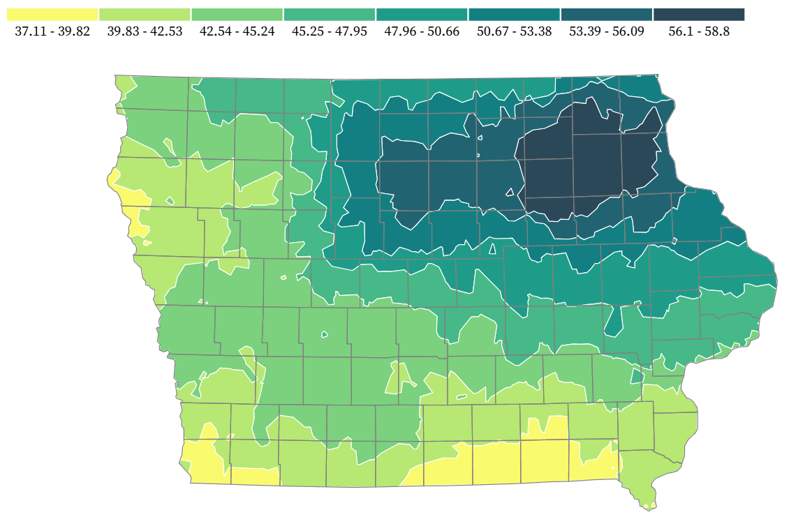
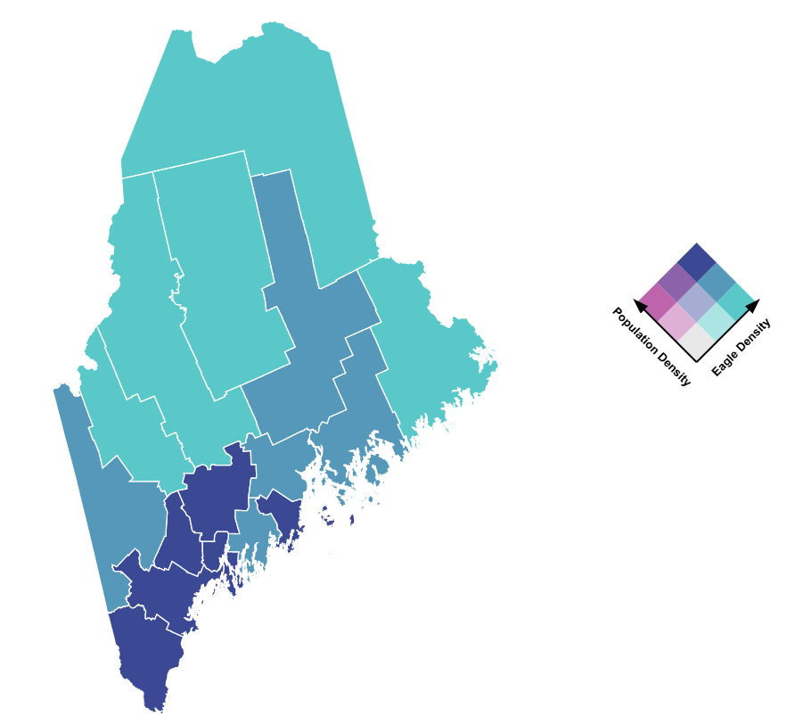
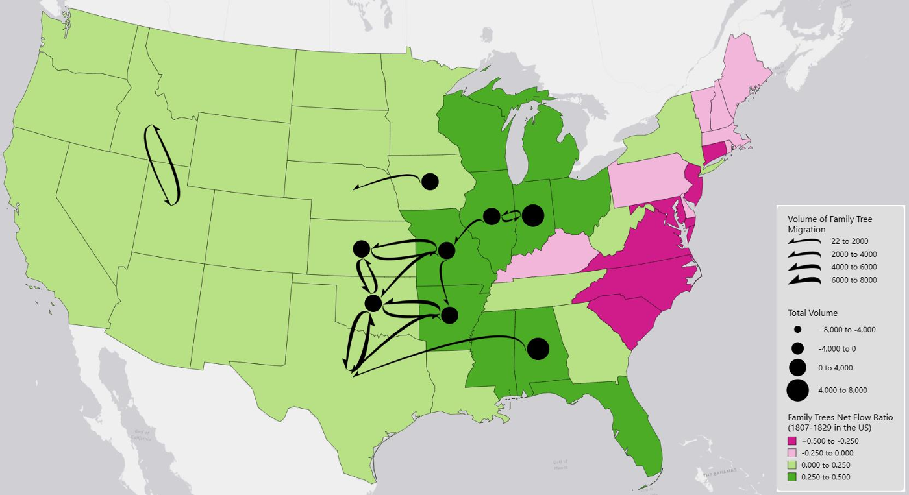

Geovisualization Portfolio
In this web page, you will see a variety of geovisualization projects I have worked on.
The projects were developed using HTML CSS, JavaScript, and a number of visualization and mapping libraries tools such as CartoDB, Leaflet, and D3.
Geographical and Sustainability Sciences

Choloropleth Mapping Project

The image shows a cholorpleth map I made to show eagle counts in US states by county. This map is using natural breaks to define class size because the data is heavily skewed, and this seemed like the best representation of the data set. There does not appear to be a strong distribution pattern in this data set. It mostly appears to be pretty evenly distributed across the country, with a lighter gradient up through the middle of the country, which may indicate that eagle habitat may not be in that area, or that there is lower population so sightings may be less. If we see this pattern because of eagle habitat, it may be because that area is a dryer desert and lacks water sources eagles need to survive.
View ProjectGraduated Symbol Mapping Project

This image shows a graduated symbol map of the population size in Maine per county. The spacial distribution of values shows that much of the population is concentrated along the coast/west border of Maine and Canada. Coastal towns definitely have a pattern of higher population density, which could be due to the draw of coastal activities, economic advantages, and the beautiful environment. For example, living on the coast of Maine allows for more things like fishing, which is a fun hobby or could be used as a full time career and provides a steady income for residents.
View ProjectIsarithmic Mapping Project

This image shows an isarithmic map of total yearly precipitation in Iowa. Northeastern Iowa shows to have the heaviest rainfall total as that area is darker, and gets lighter the further south west you go.
View ProjectBivariate Mapping Project

This image shows a bivariate map that compares population density and eagle density in the state of Maine by county. Eagles seem to be denser in the middle and northern areas of the state, and both populations are equally dense in the very southern border of the state. The most contrast is in the north, where eagle density is certainly higher than humans. I believe this relationship is because much of the state's urban areas where humans will have a higher population is in the southern area, and eagles are just everywhere because Maine is a great place for them, even in the urban areas.
View ProjectFlow Mapping Project

This image shows a flow map of net family tree migration in the US by state.The areas that had the most family trees leaving were mainly in the Eastern states, as during this time, migration west was still occurring. The states that had that were gaining more families were in the middle of the country, as those families that left the East headed west. The most flows were occurring in the Midwest mainly, as many families were changing states, but there was still mainly net positive occurring. It is interesting how we see more negative colors in the west, but the volume of flows was occurring in the middle of the country. I did try to change the map flows to be manual breaks, but the map wouldn’t update.
View ProjectQuestions
1. What is a client and what is a server?
A client is the computer or web browser trying to access your server. A server is the node located on the internet that containes a web page which has code in HTML to display and distribute content over the internet.
2. How does a server know which file to read initially and why?
Web browers are typically configured to look for a default file (index.html). It checks for a file with this name, and when someone tries to access the site, it opens that file automatically.
3. What does a code repository do and why is it important?
The repository is where all of the files used to create and that are within the webpage are stored. That's where the index.html is, as well as any images or files that are referenced on the site. This repository is important because it contains all version history, so you can go back and see what changes were made and go back to a previous version if necessary. It also hosts your website, keeps you data organized, and keeps a backup of your progress so you can easily switch computers and still be able to edit your site.
4. Why do we create external CSS files while we can use styling inside of an html?
The external use of a style sheet just increases effeciency for your code. Instead of having to retype all of the styling information for things like color and text size, you can easily just reference the style sheet that has this information stored, and it makes your code a lot shorter and ensures the same formatting across all parts of the web browser.
5. What does the “div tag” do, and how is it useful?
The div tag creates a box or section on your site that creates a visual seperation between different information. For example, all of my projects are on different div tags so that they are cleanly seperated and look more organized within each section.
6. To describe styling in an html file, which tag do you need to use?
style
7. How do you create a link in the index.html which points to a file inside the same folder as the index.html?
First, make sure whatever file you want to link is in the same folder as the index.html. Different file types need different tags; for example, a .png uses an "img" tag and a .pdf uses an "a" tag. Then, write "src=" for .png or "href=" for .pdf. Then copy and paste the exact name of the file in after the "=" with no spaces, and this will create a link or place an image on your website.
8. What is a template and how is it useful for web site building?
A template is just a base of a website that you can customize and change so that you don't have to write everything from scratch.
9. What does “pull” and “push” mean in using GitHub?
When you make changes on your desktop github app (or on applications on your computer like pulsar or your files that are connected to your repository), you need to push those to the online version of github so that the it sincs with the updates you made. When you make changes on the online version, you need to pull those changes onto your desktop application so that the updates made online sinc with your repository on the app and then update the files in the repository.
10. Why do we need to run a local web server? How do we run a local server using Python?
We run a local server so we can test our website on our computer that fuctions like a real web page. Certain features only work on a server. You can use Python Command Prompt and type cd followed by the location of the files used for your website. There are several other lines of code outlined in the project instructions that are needed to open a website: cd /document/mywebsite; python -m SimpleHTTPServer; Serving HTTP on 0.0.0.0 port 8000 ...